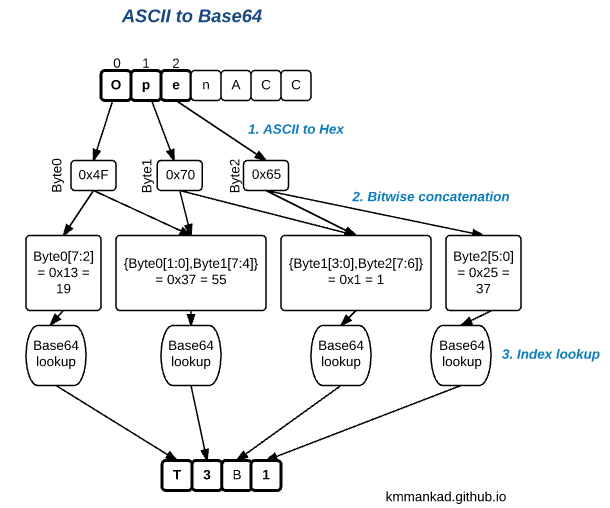

Whats OpenACC?
From http://developer.nvidia.com/openacc:
OpenACC is a directive-based programming model designed to provide a simple yet powerful approach to accelerators without significant programming effort.
What that is means is, you can pickup existing code written for an x86 CPU, and add some compiler #pragmas, compile with an OpenACC capable compiler - and voila! You get accelerated binaries for a range of hardware accelerators - Nvidia GPUs, AMD GPUs and even Intel multi-core CPUs. Thats really the USP of OpenACC - a single copy of the source code will deliver performance portability across this range of hardware platforms.
So, to be successful with OpenACC all you need are strong concepts in parallel programming, some know-how about OpenACC syntax and you’re good to go! You dont need to really know too many lower level hardware details with OpenACC, as opposed to, maybe CUDA C. However, this is a double edged sword - I will revisit this later in this post.
There are some really good tutorials on OpenACC itself available online:
1. Jeff Larkin’s post on the Parallel Forall blog
2. Jeff Larkin’s sessions from GTC 2013 - recordings on Youtube here : Part1 Part2
The recommended approach for parallelism anywhere is to:
1. Try and use existing parallel optimized libraries like cuBLAS, cuDNN etc. if they exist for your application.
2. If you dont get those, try OpenACC on your code. That should get you about 80% of the maximum available performance.
Ofcourse, that is a very rough number and is subject to, you guessed it, your code and the GPU hardware you’re running.
3. Roll your own CUDA kernels. This is definitely the most involved of the 3 options, but it will allow you to squeeze
every last drop of that good perf juice from your software and hardware.
OpenACC tutorials online often use the Jacobi Iteration/sAXPY example to demonstrate OpenACC, but all that those examples teach us are syntax constructs. However, if you use OpenACC in the real world, you’ll know it’s all about how you analyze your source code, understand its scope for parallelism and finally express that formally via OpenACC syntax. What this post is really about is about the analysis of a simple program, which is hopefully a little less trivial than the Jacobi type examples all over the net.
First off, some logistics about tool installation and setup.
- We will be using the PGI Compiler today, which you can get from the PGroup’s site
- You can also download the OpenACC toolkit from NVIDIA
If you have everything correctly setup, try pgcc --version as shown below
1 2 3 4 5 6 | |
Now, onto our target today - a subroutine that converts a hexadecimal string to base64. I picked this up from the matasano cryptography challenges I’m attempting on the side and decided it’d be a good example for this tutorial.
Heres a brief overview of the algorithm itself: 1. Take 3 bytes of input hex data at a time, 2. Do some bitwise concatenation (shift and OR) and get indexes of 4 base64 characters that these 3 bytes are encoded into 3. Lookup the actual base64 characters using these indices. ..and heres a quick diagram to explain that:

 +
+  =
= 
 +
+